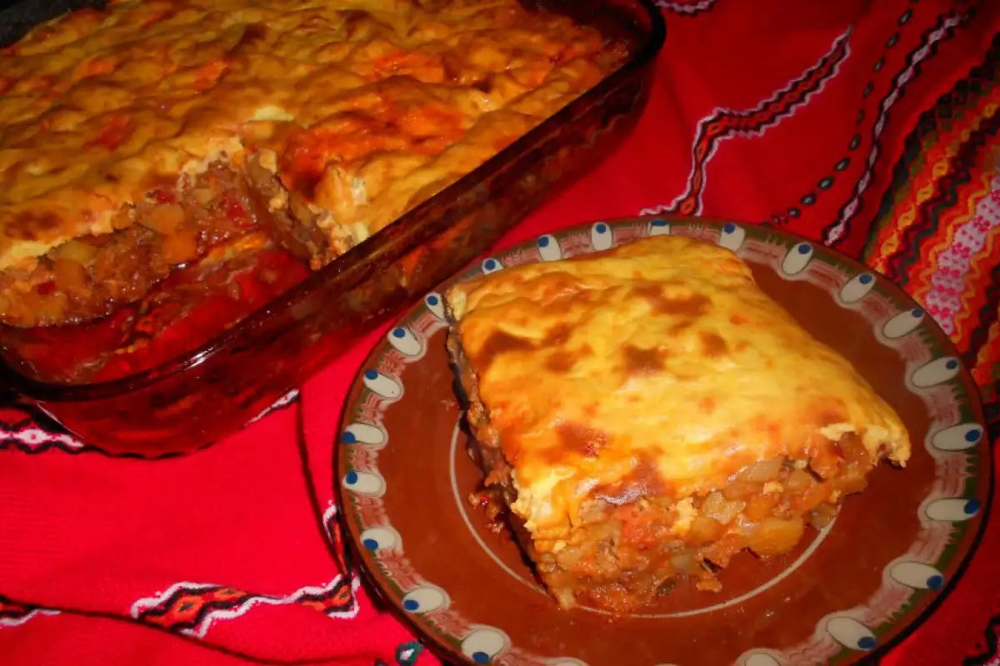
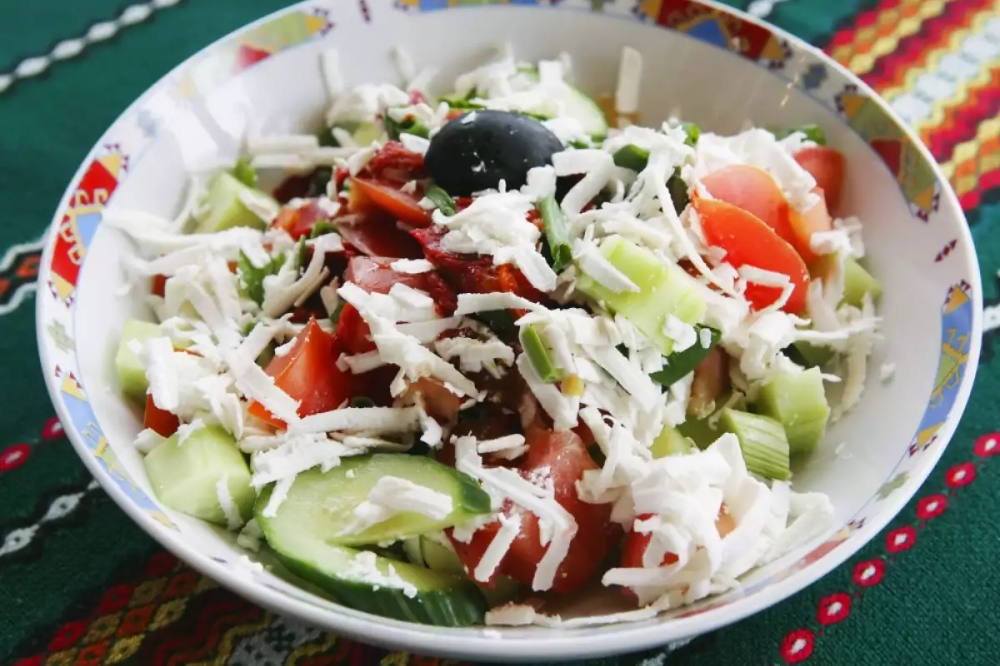

Мусака
Мусаката е традиционно българско ястие, приготвено с картофи, кайма и заливка от яйца и кисело мляко. Тя е любима на много семейства заради богатия си вкус и аромат.
Към рецептата
Шопска салата
Шопската салата е свежо ястие, съчетаващо домати, краставици, чушки и сирене. Тя е идеалното предястие за летните дни и е символ на българската кухня.
Към рецептата
Таратор

Тараторът е освежаваща студена супа, приготвена с кисело мляко, краставици, чесън и копър. Той е идеален за горещите летни дни и е любим на много българи.
Към рецептата